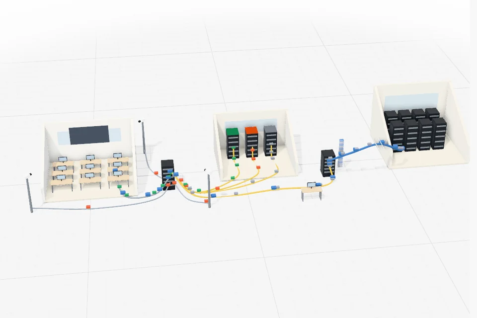

Đại họcThiết kế và hiệu năng mạng
Từ yêu cầu dịch vụ tới thiết kế logic, vật lý, kiểm thử và mạng 5G. Số trên màn hình tính từ công thức của giáo trình; trễ hàng đợi lấy từ mô phỏng chạy ngay trong trình duyệt.

1Tiết 1 · Thiết kế mạng bắt đầu từ dịch vụMỗi con số trên màn hình được tính từ công thức của giáo trình; trễ hàng đợi lấy từ mô phỏng sự kiện rời rạc chạy ngay trong trình duyệt và đặt cạnh lời giải lý thuyết để người học thấy mô hình khớp.
22 tiết, mỗi tiết 45 phút, phủ trọn sáu chương của giáo trình. Mỗi tiết có một bài 3D để chiếu trên lớp và một giáo án: mục tiêu, diễn tiến theo phút, ví dụ giải mẫu, phiếu bài tập, đáp án và câu hỏi kiểm tra nhanh, bám đúng mục, trang và số hiệu công thức của sách.
Hệ số đồng thời, tải dịch vụ, phân vị 95; ma trận lưu lượng; tốc độ hữu dụng; dung lượng liên kết
Mô hình topo, luồng, chức năng; tiền tố theo tăng trưởng, căn biên, gộp tuyến
Chi phí đường đi, Dijkstra; ECMP chia đều hay băm; đổi metric; hội tụ bốn pha
Leaf-spine và VXLAN/EVPN; tenant; 5GS, slicing, MEC, O-RAN trong thiết kế logic; ma trận truy vết
Khảo sát; IDF mỗi tầng hay kéo về MDF; giới hạn 90 m; số cổng, Ω; PoE, UPS; sơ đồ và hồ sơ
Cáp đồng, quang đa mode, đơn mode; công suất thu; dung lượng, trễ tuần tự, dự phòng
Tốc độ PHY và thông lượng thật; QoS tại biên; hạ tầng 5G, fronthaul; nghiệm thu
Mô hình hoá; trạng thái và sự kiện; thống kê kết quả đo; kiểm thử chuẩn; kế hoạch thử; đọc kết quả theo chuỗi nguyên nhân
Tối ưu theo nút nghẽn; multicast; trễ tuần tự hoá; DiffServ, DSCP, ECN; ưu tiên có giới hạn
Khối kiến trúc 5GS; mặt phẳng điều khiển và người dùng; UPF ở biên, vùng hay trung tâm; ngân sách trễ
| Chương 1 · Tổng quan về thiết kế và hiệu năng mạng | |||
| 1 | Thiết kế mạng bắt đầu từ dịch vụ · giáo án | mục 1.1–1.5 tr. 1–13 | Chu trình thiết kế và kiểm chứng; dịch vụ, QoS, SLA, metric; mạng như một hệ thống; vector yêu cầu và điều kiện nghiệm thu PT 1.1–1.6, 1.8 · bài tập C1.1, C1.2, C1.7 |
| 2 | Gói tin qua ba chặng · giáo án | mục 1.5.2, 1.6.1 tr. 13–14 | Mức sử dụng và dư địa; độ trễ đầu cuối bốn thành phần; trễ hàng đợi từ mô phỏng so với M/M/1; thời gian đáp ứng PT 1.7, 1.9–1.12 · bài tập C1.3, C1.4 |
| 3 | Khi hàng đợi đầy · giáo án | mục 1.6.2–1.6.4 tr. 14–16 | Bộ đệm K gói: mất gói, biến thiên trễ, lỗi bit, thông lượng và goodput; bộ đệm lớn có tốt hơn? PT 1.13–1.18 · bài tập C1.5 |
| 4 | Độ sẵn sàng, RTO và RPO · giáo án | mục 1.6.5 tr. 16–18 | MTBF, MTTR; hai đường lên chung một ống hay tách hai ngả; đồng hồ phục hồi bốn pha; công thức so với Monte Carlo PT 1.19, 2.17–2.19, 4.14 · bài tập C2.8 |
| 5 | Vòng vận hành có kiểm chứng · giáo án | mục 1.7–1.10 tr. 18–30 | Ba hướng đánh giá; telemetry và sai lệch Δk; nền tảng 5G-Advanced và 6G; ràng buộc mới; độ phủ quan sát Γ PT 1.20–1.28 · bài tập C1.6, C1.8–C1.13 |
| Chương 2 · Phân tích yêu cầu thiết kế mạng | |||
| 6 | Từ "mạng phải nhanh" đến vector yêu cầu | mục 2.1, 2.2.2–2.2.3 tr. 38–46 | Yêu cầu chức năng và phi chức năng; yêu cầu tốt; vector yêu cầu và điểm ưu tiên; QoE, QoS, SLA, SLO, KPI; lớp dịch vụ PT 2.1, 2.2, 2.5, 2.6 · bài tập C2.1–C2.4 |
| 7 | Đếm tải thật | mục 2.2.1, 2.2.4, 2.3 tr. 43–51 | Hệ số đồng thời, tải dịch vụ, phân vị 95; ma trận lưu lượng; tốc độ hữu dụng; dung lượng liên kết PT 2.3, 2.4, 2.7–2.11 · bài tập C2.5–C2.7 |
| 8 | Yêu cầu mới của 5G-Advanced và 6G | mục 2.4 tr. 51–56 | QoS flow; slice theo tài nguyên; vị trí xử lý MEC; O-RAN, SDN, NFV; AI; NTN, UAV; ISAC PT 2.12–2.16 · bài tập C2.13–C2.15 |
| 9 | Rủi ro, đặc tả và truy vết | mục 2.5–2.6 tr. 56–63 | RMA và miền lỗi; rủi ro an toàn thông tin; đặc trưng hoá lưu lượng; ma trận truy vết; mẫu đặc tả PT 2.17–2.20 · bài tập C2.9–C2.12 |
| Chương 3 · Thiết kế mạng logic | |||
| 10 | Kiến trúc thành phần mạng | mục 3.1–3.2 tr. 69–79 | Nguyên tắc thiết kế logic; chức năng, khả năng, cơ chế; thành phần địa chỉ, quản lý, hiệu năng, bảo mật; tối ưu kiến trúc PT 3.1–3.13 · bài tập C3.1, C3.2, C3.9, C3.10 |
| 11 | Mô hình kiến trúc và chia địa chỉ VLSM | mục 3.3, 3.4.1 tr. 79–85 | Mô hình topo, luồng, chức năng; tiền tố theo tăng trưởng, căn biên, gộp tuyến PT 3.4–3.8, 3.14, 3.15 · bài tập C3.3–C3.5 |
| 12 | Định tuyến, ECMP và hội tụ | mục 3.4.2 tr. 85–88 | Chi phí đường đi, Dijkstra; ECMP chia đều hay băm; đổi metric; hội tụ bốn pha PT 3.16–3.19 · bài tập C3.6, C3.7 |
| 13 | Underlay, overlay và thiết kế logic 5G | mục 3.4.3, 3.5, 3.6 tr. 88–94 | Leaf-spine và VXLAN/EVPN; tenant; 5GS, slicing, MEC, O-RAN trong thiết kế logic; ma trận truy vết PT 3.20–3.25 · bài tập C3.8, C3.11, C3.12 |
| Chương 4 · Thiết kế mạng vật lý | |||
| 14 | Tòa nhà 8 tầng: tủ mạng, cáp và PoE | mục 4.1, 4.2.1–4.2.2, 4.2.5, 4.3, 4.4.4 tr. 99–113 | Khảo sát; IDF mỗi tầng hay kéo về MDF; giới hạn 90 m; số cổng, Ω; PoE, UPS; sơ đồ và hồ sơ PT 4.1, 4.3, 4.5, 4.7–4.9, 4.15, 4.16 · bài tập C4.1–C4.3, C4.5–C4.7, C4.12 |
| 15 | Môi trường truyền dẫn và ngân sách quang | mục 4.2.3, 4.4.1–4.4.3 tr. 104–112 | Cáp đồng, quang đa mode, đơn mode; công suất thu; dung lượng, trễ tuần tự, dự phòng PT 4.2, 4.4, 4.10–4.14 · bài tập C4.4 |
| 16 | Wi-Fi, 5G và nghiệm thu vật lý | mục 4.2.4, 4.4.5–4.6 tr. 105–117 | Tốc độ PHY và thông lượng thật; QoS tại biên; hạ tầng 5G, fronthaul; nghiệm thu PT 4.6, 4.17–4.19 · bài tập C4.8–C4.11 |
| Chương 5 · Kiểm thử và đánh giá hiệu năng mạng | |||
| 17 | Phòng đo | mục 5.1, 5.3, 5.5 tr. 121–140 | Mô hình hoá; trạng thái và sự kiện; thống kê kết quả đo; kiểm thử chuẩn; kế hoạch thử; đọc kết quả theo chuỗi nguyên nhân PT 5.1–5.11, 5.18–5.23, 5.30 · bài tập C5.1, C5.3, C5.5, C5.6 |
| 18 | Tối ưu mạng: hàng đợi và QoS | mục 5.2 tr. 126–130 | Tối ưu theo nút nghẽn; multicast; trễ tuần tự hoá; DiffServ, DSCP, ECN; ưu tiên có giới hạn PT 5.12–5.17 · bài tập C5.2, C5.4 |
| 19 | Kiểm thử 5G-Advanced và tối ưu vòng kín | mục 5.4 tr. 134–138 | Kiểm thử slice và SLA; MEC, O-RAN; NTN, UAV, ISAC; telemetry, assurance, vòng kín PT 5.24–5.29 · bài tập C5.7–C5.12 |
| Chương 6 · Các mô hình thiết kế và vận hành mạng 5G | |||
| 20 | Gói tin 5G đầu-cuối và vị trí UPF | mục 6.1, 6.3.3 tr. 146–152 | Khối kiến trúc 5GS; mặt phẳng điều khiển và người dùng; UPF ở biên, vùng hay trung tâm; ngân sách trễ PT 6.1–6.3, 6.8, 6.9 · bài tập C6.1, C6.4 |
| 21 | NSA, SA và hạ tầng vô tuyến | mục 6.2, 6.3.1–6.3.2, 6.4.1–6.4.2 tr. 148–154 | NSA và nút thắt neo LTE; SA và lõi SBA; PDU session, QoS flow, 5QI; vùng phủ, dung lượng, fronthaul, đồng bộ PT 6.4–6.7, 6.10–6.12 · bài tập C6.2, C6.3, C6.5 |
| 22 | Slicing, bảo mật, vận hành và hướng 6G | mục 6.4.3–6.6 tr. 154–159 | MEC, NFV, cloud-native, O-RAN; network slicing; bảo mật; điều phối tự động; kiểm chứng 5G; IMT-2030 PT 6.13–6.18 · bài tập C6.6–C6.10 |
Nội dung theo giáo trình Thiết kế và hiệu năng mạng (học phần TEL1459), PGS.TS Hoàng Trọng Minh, Học viện Công nghệ Bưu chính Viễn thông, 2026. Dựng bài giảng theo đề nghị của tác giả. Hình và lời giảng trong bài là của Sáng Ăn Khoai, không chép hình hay văn bản của giáo trình; công thức giữ đúng số hiệu trong sách để người học tra lại.